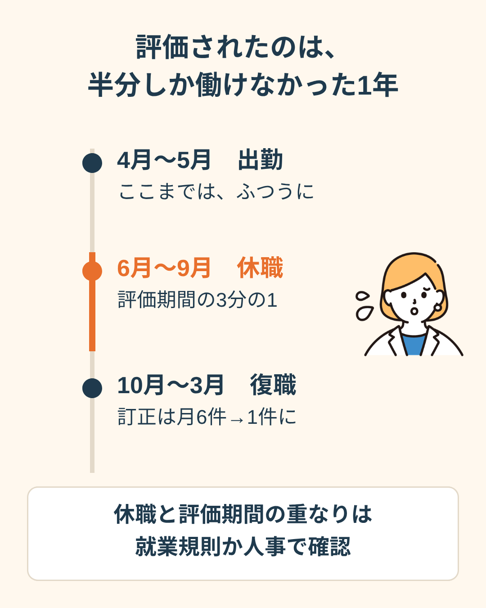
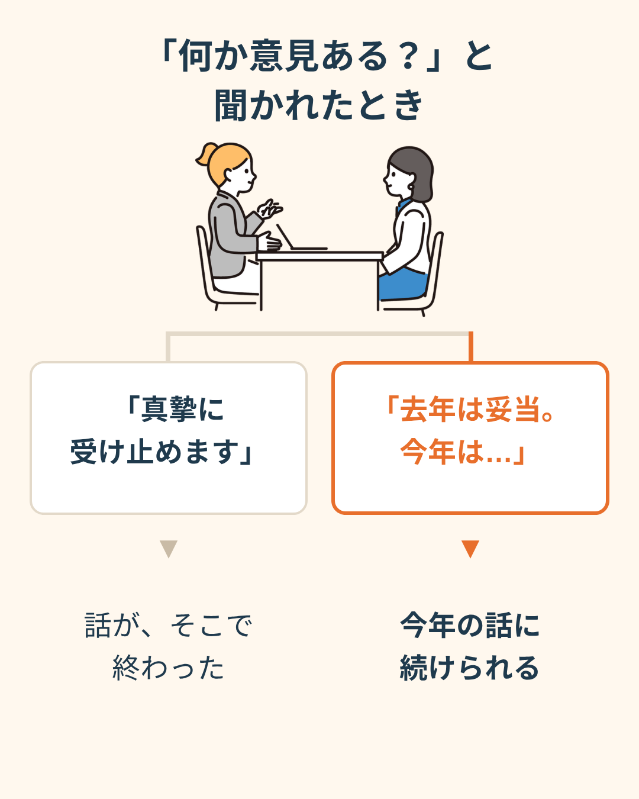
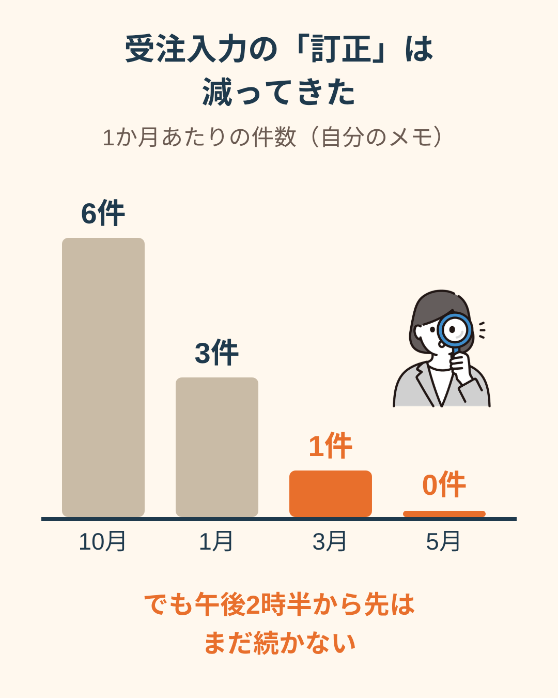
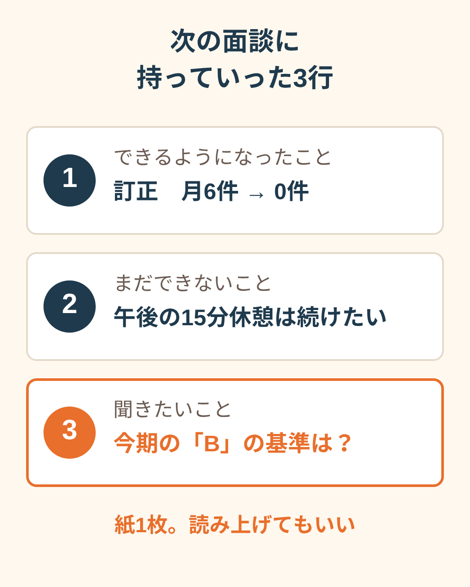
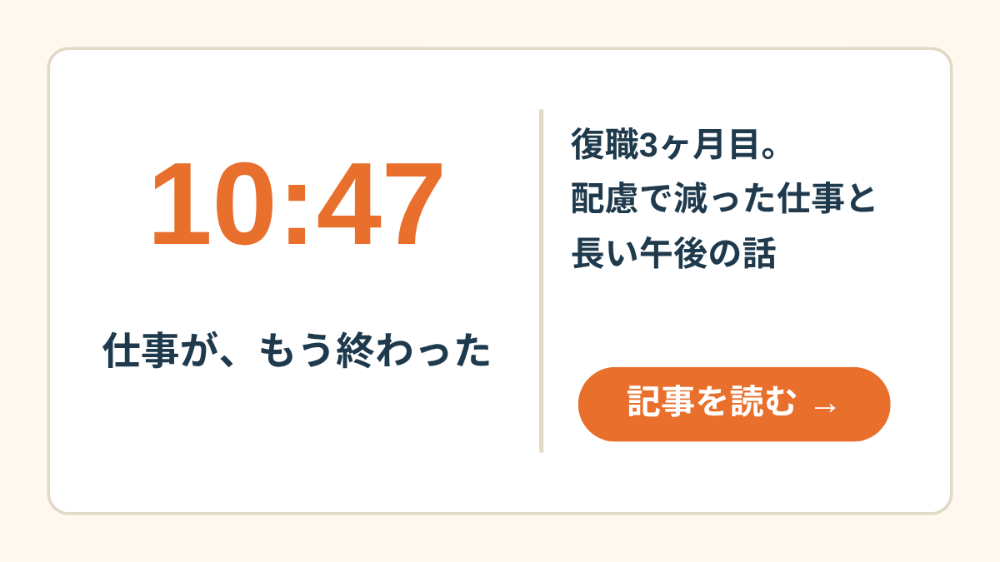
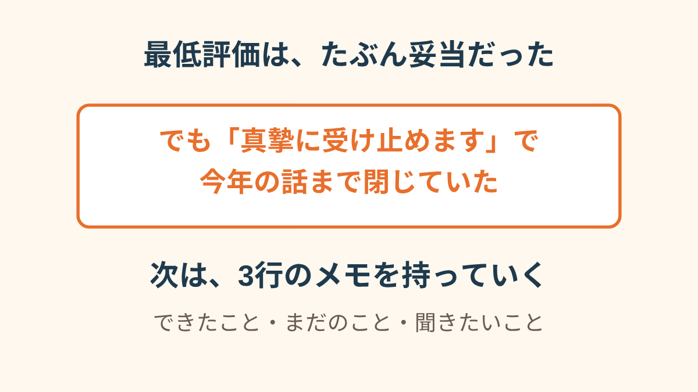

5月の、窓のない小さい会議室。課長がA4の評価シートを机の上で私のほうに向けた。
総合評価の欄に「D」。5段階のいちばん下。
知ってた。というか、分かってた。だから前の晩、言うことを決めて寝た。
評価シートのいちばん下に「D」
39歳、食品卸の会社で受発注の入力をしている。去年の6月から9月まで、適応障害で4ヶ月休職した。10月に戻って、年内は時短。1月からフルタイムに戻した。
うちの会社の評価は、4月から翌年3月までの1年で見る。つまり今回の評価は、ほとんど働けていなかった1年についての評価だった。

理由の欄には「評価対象期間の出勤日数が少なく、目標の達成に至らず」。そのとおりだった。復職したての10月は、受注の入力ミスで訂正を出すのが月に6回。営業さんに「また？」と言われたこともある。
課長は40代の女性で、休職の手続きのときも、戻ってきた日も、ふつうに接してくれた人だ。嫌な人じゃない。だから余計に、ちゃんとした態度でいようと思っていた。
ひととおり説明が終わって、課長が言った。
「この評価について、何か意見ある？」
前の晩に決めておいた言葉を言った。
「いえ、そのとおりだと思います。真摯に受け止めます」
課長はシートをトントンと揃えながら、ほとんど聞こえない声で言った。
「……そういうことじゃ、ないんだけどな」
「え？」と聞き返した。課長は「ううん。じゃあ、今期の目標ね」と次の紙を出した。そこから先の15分、何を話したのかあまり覚えていない。
「評価シートの備考に『休職により評価対象期間不足』って一行だけあって。いや分かってるんですよ、事実なんで。でもその一行、毎年人事のファイルに残るのかなと思ったら、その日はもう仕事にならなかったです。誰にも何も言われてないのに、勝手に一人で落ちてました」
小さな声の一言が、3週間抜けなかった
会議室を出て、そのままトイレの個室に入った。評価シートのコピーを四つ折りにして、ポーチの奥に入れた。泣いてはいない。たぶん3分くらい、便座のふたの上に座っていただけ。
帰りの電車で、スマホのメモに「そういうことじゃないんだけどな」と打った。打って、消して、また打った。
そこから3週間、ずっと考えていた。
もっと謝ってほしかったのか。反省が浅いと思われたのか。それとも、私がこの会社に向いてないって言いたかったのか。夜、歯を磨きながら、課長の声のトーンを何回も再生した。再生するたびに、悪いほうの意味が増えていった。
6月の賞与は、言われていたとおり少なかった。それはもう、そういうものだと思っていたので、あまり痛くなかった。痛かったのは、あの一言のほうだった。


「賞与の明細で、査定の欄だけ下がってて。店長は『去年は仕方ないよね』って言ってくれたんです。優しさなのは分かる。でも私、その『仕方ない』がいちばん刺さりました。仕方ない人、になったんだなって。半年くらい、自分から店長に話しかけられなかったです」
次の面談に、紙を1枚持っていった
うちの課は、評価とは別に、月1回15分の面談がある。6月の面談の前の晩、A5のメモ用紙に3行だけ書いた。
書くために、復職してからの訂正の回数を数え直した。10月は6件。1月は3件。3月は1件。5月はゼロだった。

ゼロになっていたことに、自分でびっくりした。去年の評価のことばかり考えていて、今の自分を一回も数えていなかった。
でも、良くなった話だけ書くのも違う気がした。午後2時半を過ぎると、画面の数字が頭に入ってこなくなる。今は課長に言って、3時に15分だけ休憩をもらっている。金曜の夜は、だいたい夕飯を作れない。

面談の最初に、思い切って聞いた。
「あの、この前の評価のとき、『そういうことじゃない』っておっしゃってたのって」
課長は少し黙って、それから困ったように笑った。
「あー……聞こえてたか。いや、全部そのとおりですって言われるとさ、こっちも今年の話ができないじゃない。去年のことはもう去年でいいから、今年どうしたいか聞きたかったの」
本当にそういう意味だったのか、私に気を使ってそう言ったのか、正直分からない。でも3週間ぶん増え続けていた悪い意味は、そこで止まった。
メモを読み上げた。訂正がゼロになったこと。3時の休憩は、まだ続けたいこと。それから、今期「B」をもらうには何ができていればいいのか。
課長は休憩のところで「それは続けて」と言って、基準のところでは「……正直、私も人事の資料を見ないと言えない。来月までに確認しとく」と言った。答えはまだもらっていない。
あわせて、仕事を増やしたいと言い出せなかった人の話も読んだ。言い出せないまま午前中で手が空いてしまう感じ、すごく分かった。

復職3ヶ月、仕事が10時47分に終わる人の話 →評価シートの「D」は、たぶん妥当だった。今でもそう思う。
ただ、あの日の「真摯に受け止めます」は、反省の言葉じゃなかった。早く会議室を出たくて、自分で話にフタをした言葉だった。それに気づくのに、3週間とメモ用紙1枚かかった。
四つ折りの評価シートは、まだポーチの奥に入っている。捨てるタイミングが、なんとなく分からない。

この記事に、聞いてみたいことはありますか？
「自分の場合はどうなんだろう」と思ったことを、気軽に書いてみてください。いただいた質問は個別にお返事したうえで、匿名で記事にすることがあります。